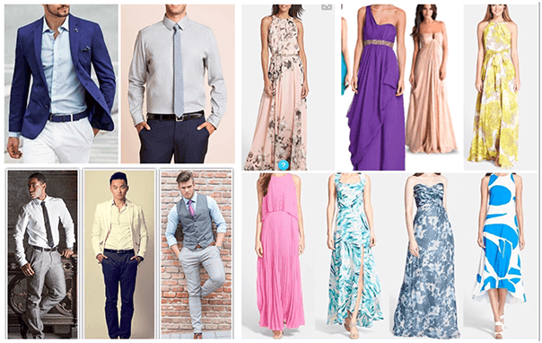

Sábado 12 de marzo, 2016
Lotus Hacienda, La Guácima de Alajuela
3:00pm.
Nuestra boda será civil; la ceremonia, la cena, y la fiesta las vamos a hacer todas en la misma Hacienda. Les agradecemos la puntualidad, ha sido un enorme trabajo de un gran equipo y realmente nos encantaría iniciar la ceremonia con todos ustedes presentes.
Dirección exacta: San Rafael de Alajuela, de la entrada de Hacienda los Reyes 300 metros sur. En la Iglesia doblar a mano izquierda, calle de lastre de 1 km, portones de madera con muro de piedra al lado izquierdo.
Para ver la dirección de Hacienda Lotus en Waze, hacer click aquí.
Les agradecemos confirmar su asistencia enviando un mensaje de texto o whatsapp a Natasha Moscoa al número 8846-2828 antes del 20 de febrero. Sería un detallazo.
La boda será en marzo, en la Guácima, y empezará en horas de la tarde: va a estar caliente. Además, dado que tanto la ceremonia como recepción serán al aire libre, la mayor parte del tiempo estaremos sobre zacate, por lo que pensamos que una vestimenta cómoda es esencial. Para ello, recomendamos zapatos y vestidos cómodos, ¡esperamos nadie se nos ase en media boda! Estas son algunas ideas que podrían ayudar a orientarlos.
